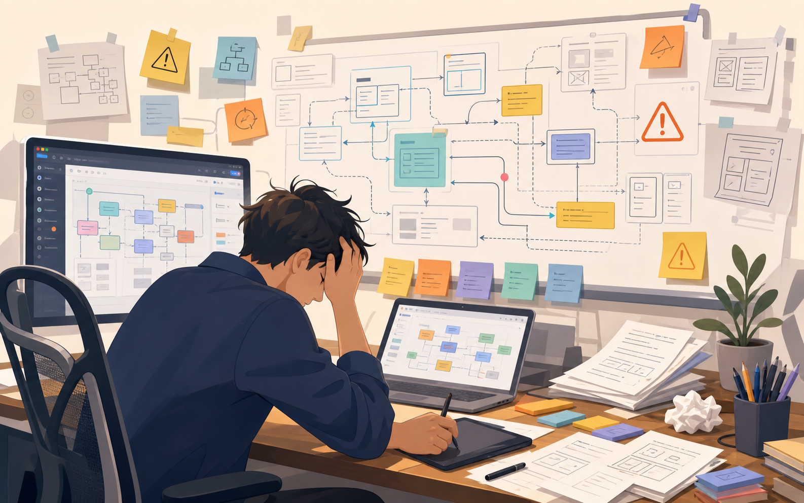

产品架构图：
从手工梳理到 AI 生成
这一节我们盘点画产品架构图的工具和方法，重点看 AI 如何把需求文档、功能清单和系统描述转成可交付的结构图。
为什么产品经理也要会画架构图？
产品架构图不是为了炫技，而是为了把“业务、功能、数据、角色、系统边界”放在同一张图里。
它让业务方知道产品覆盖什么，让设计和研发知道模块边界，也让团队能提前发现漏掉的角色、数据流和系统依赖。
对齐范围
哪些模块在本期，哪些只是外部依赖。
暴露边界
前台、后台、服务、数据和第三方接口分清楚。
减少返工
在画图阶段发现漏掉的角色和流程。
便于汇报
让复杂产品用一张图进入决策讨论。
以前怎么画？现在有 AI 后怎么画？
过去的问题不只是慢，而是“越改越乱”
PM 要先读文档，再手动拆模块、摆框、连线、对齐。需求一变，图也跟着重排，最后经常没人愿意维护。
新的方式：先让 AI 把结构变成第一版图
把 PRD、功能清单、系统描述交给 AI，让它先提炼模块、角色、数据流和系统边界，再生成 SVG/HTML、图片提示词，或直接调用图片 API 出图。

由浅入深：产品架构图的 4 层思考
新手常见问题是把所有东西都塞进一张图。更好的方式是先分层：用户看什么、产品有哪些模块、系统怎么连接、数据怎么流动。
1. 功能树
先回答“产品有哪些能力”：模块、子模块、功能点。适合早期盘点和范围确认。
2. 信息架构
再回答“用户如何理解和找到这些能力”：导航、分类、层级、入口和命名。
3. 系统边界
继续回答“哪些是我们的系统，哪些是外部系统”：角色、应用、后台、服务、第三方。
4. 数据流
最后回答“信息怎么流动”：输入、处理、存储、同步、通知和反馈。
借用 C4 的思路：不同听众看不同层级
C4 不是仓库里原生的内容，而是我们补充借用的一个经典分层视角。它把软件结构分成 Context、Container、Component、Code 四层。产品经理不一定要画到代码层，但它的“逐级放大”思路非常适合产品架构沟通。
| 层级 | 产品经理怎么用 | 适合谁看 | 一句话 |
|---|---|---|---|
| Context | 系统和外部角色/系统的关系 | 老板、业务方 | 这个产品在业务里扮演什么角色？ |
| Container | 前台、后台、服务、数据存储的拆分 | 产品、设计、研发 | 产品由哪些大块组成？ |
| Component | 某个模块内部的子能力和交互 | 产品、研发 | 这个模块怎么工作？ |
| Code | 代码级结构，PM 通常不需要深入 | 研发 | 实现细节如何落地？ |
优秀架构图，先从“为什么”开始
产品架构不是模块堆叠。好的图会让人看出目标、用户机会、解决方案和系统承载之间的关系。点击左侧步骤，可以按流程逐步展开。
Outcome：先定目标
先问这张图服务什么目标：降低沟通成本、确认版本范围、对齐系统边界，还是给老板汇报产品全貌。
Opportunity：再看用户问题
架构图要能映射真实用户问题。否则图再漂亮，也只是功能堆叠。
Solution：形成解决方案
把用户问题翻译成功能方案：哪些能力要进产品，哪些只是运营流程，哪些依赖第三方系统。
Module：落到产品模块
把方案拆成模块、子模块和权限入口，这一步是产品架构图最常见的表达。
System：补上系统边界
最后画清楚应用、服务、数据层和外部依赖，让研发能判断接口、数据和实现边界。
从方法到工具：让 AI 先画第一版
前面我们讲的是“应该怎么想”。接下来落到仓库里的 `arch-diagram`：它把这些思考变成一个可执行流程，先提炼架构信息，再选择输出形式。
arch-diagram 工作流
工具盘点：不同阶段选不同工具
产品设计里常用的三张架构图
不要试图用一张图解决所有问题。不同阶段，我们需要不同粒度的图。
产品模块图
回答“产品由哪些模块组成”。适合需求评审、范围确认和版本规划。
系统关系图
回答“模块之间、系统之间怎么连接”。适合和研发对齐边界。
数据流程图
回答“数据从哪里来、到哪里去、在哪里存”。适合发现同步和权限风险。
怎么安装这个 Skill？
新版 skill 依赖 `references/svg-template.html`，所以安装时要复制整个 `skill` 目录，而不是只复制 `SKILL.md`。
实操时怎么描述需求？
输入不需要很长，但要包含系统名称、用户角色、主要模块、外部依赖和希望输出的图形类型。
一张合格的产品架构图，要过 6 个检查
| 检查项 | 问题 | 常见错误 |
|---|---|---|
| 目标 | 这张图要帮谁做什么决策？ | 没有受众，所有内容混在一起。 |
| 角色 | 谁在使用系统？谁是外部参与者？ | 只画模块，不画角色。 |
| 边界 | 哪些是本系统，哪些是外部系统？ | 第三方服务和自研模块混在一起。 |
| 层级 | 是模块级、系统级，还是数据流级？ | 一张图里同时塞入过多层级。 |
| 流向 | 箭头方向是否说明了真实关系？ | 连线很多，但不知道谁调用谁。 |
| 可维护 | 需求变化后是否容易更新？ | 手工美化太多，后续没人愿意改。 |
这节课你能获得什么
第一，知道产品架构图不只是画框和箭头，而是产品沟通和系统边界对齐工具。
第二，掌握从功能树、信息架构、系统边界到数据流的分层方法。
第三，知道如何用新版 `arch-diagram` 在 SVG、提示词、直接出图三种方式之间做选择。